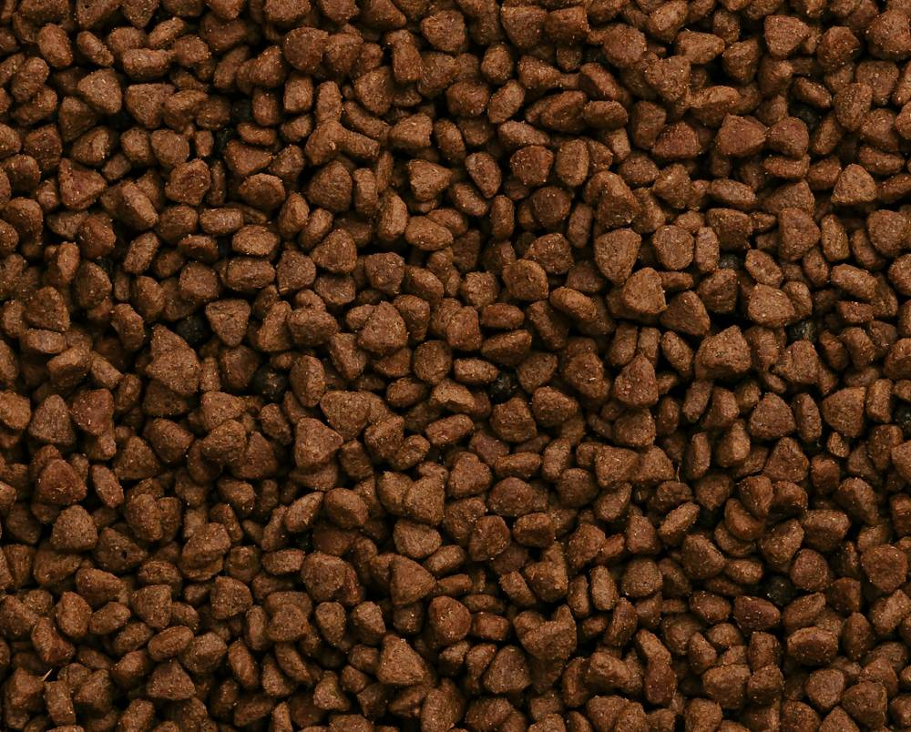
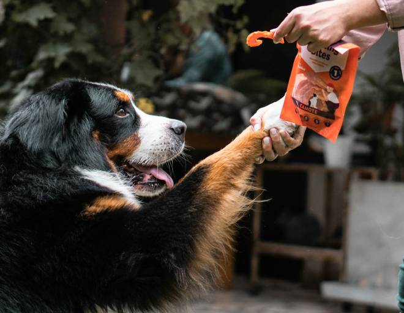
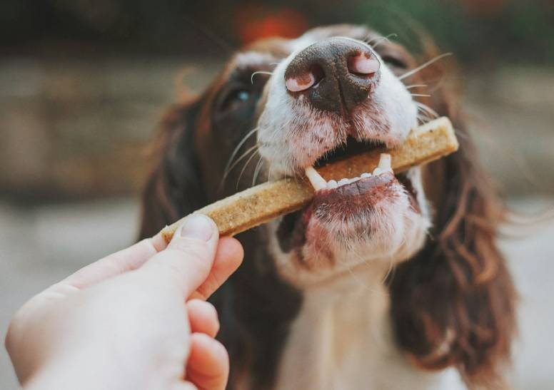

Koiranherkut
Täältä löydät laadukkaat ja terveelliset herkut koirallesi!
Valikoima:

Luun muotoiset koirankeksit
- Sokeriton ja viljaton.
- Nämä herkulliset miniluu -keksit ovat ravintorikkaita, vähärasvaisia ja varsinkin maukkaita.

Kuivanappulat
- Kuivanappula -pussi, saatavana 15kg ja 30kg.
- Erinomainen ravinto koirallesi. Sopii myös herkkävatsaisille koirille.
- Ravinnerikas, vähäsokerinen ja viljaton. Ei allergisoivia ainesosia, ei sisällä soijaa. Vitamiinipitoinen ilman keinotekoisia lisäaineita.

Kuivaherkku
- Tämä kuivaherkku -pussi on herkullinen makupala lemmikillesi. Sopii hyvin koulutukseen.
- Sokeriton, ei sisällä keinotekoisia makeutusaineita.
- Puhdistaa ja vahvistaa samalla hampaita ja sisältää vitamiineja.

Tikkuluu
- Tämä perus tikkuluu sopii hyvin hammasvaivoista kärsiville koirille, sillä se auttaa puhdistamaan ja vahvistamaan hampaita.
- Kestävä ja terveellinen, ei keinotekoisia aineosia.
- Sisällä maukas vitamiinipitoinen lihatäyte, ei sokeria, ei viljaa.